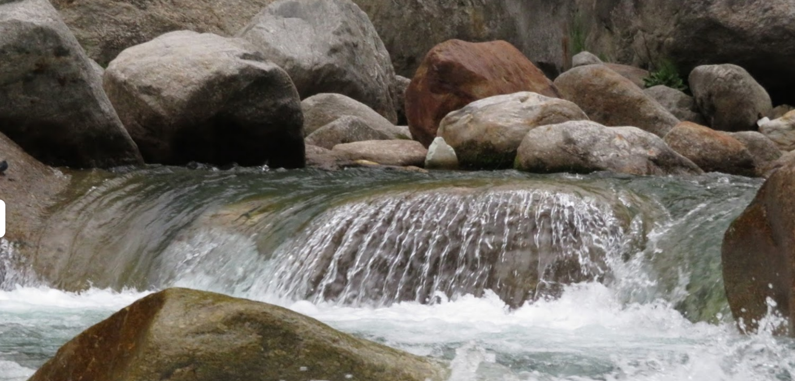
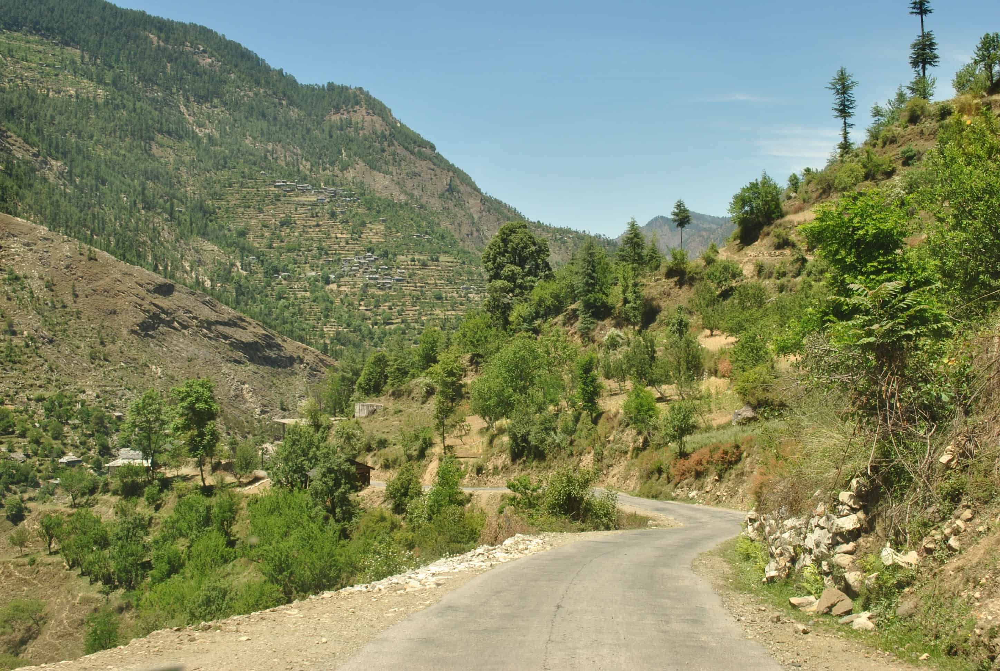

Himachal Pradesh is as scenic as it gets. There is a reason why so many of our domestic vacations begin and end with Himachal Pradesh in mind! While everyone is aware about the beauty of Manali and the old-world charm of Shimla – we, at DoW pride ourselves in introducing you to the lesser known wonderlands hidden in plain sight. One such beauty lies in the unassuming village of Gushaini! Tirthan, Banjar and Sainj Valleys are some of the most unknown, unexplored regions that are well connected by a road network. The beginning of Great Himalayan National park sees these valleys dotted around. Over the course of the coming articles, I will introduce you to this charming region of the hills.
About Gushaini |
|
|---|---|
|
The big entrance to the Great Himalayan National Park lies this quaint little town of Gushaini. Literally 10 KMs from the big mammoth National Park, Gushaini lies at an elevation of 4500 ft. With natural groves of the hills, the captivating aura of the Tirthan river is only catapulted further by the lush green Himalayas all around. If Parvati valley is stunning for its magnanamous and very alive Parvati River, then Tirthan Valley is calm, cool and collected like the river that flows through it too! So calm, so tranquil – you’ll soon be in a trance like no other. The river is also the home of the epic Himalayan Trouts, which is why this valley is often nicknamed as the Trout Country! Most people heading on treks in to the Great Himalayan National Park are well aware of Gushaini. The town itself offers a host of activities from fishing and angling to river crossing, rappelling, hiking, camping – you can do it all here. Or, if you prefer- you can choose to do aboslutely nothing, nada, zilch and still get the most of your adventure! Such is the charm of this tiny town. |
 |
Weather |
|
|---|---|
|  |
Akin to the region, the weather is pretty synonymous with most of the Himalayas. Summer months are pleasant, winter months are a magical wonderland and monsoon season is best avoided! If you’re looking for enjoying the lush green hills – head to Gushaini right after the monsoon season. Best months for sightseeing are April – September (minus the monsoon period, of course!) |